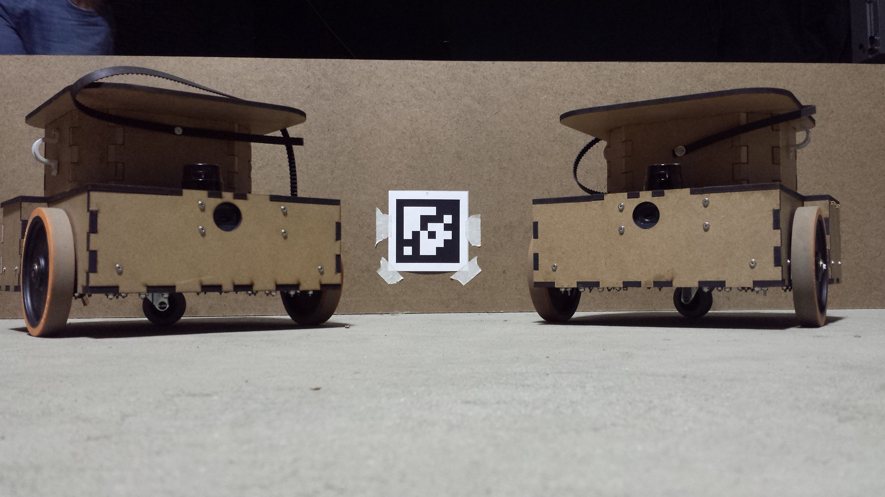
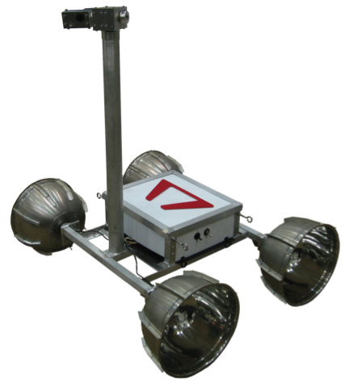
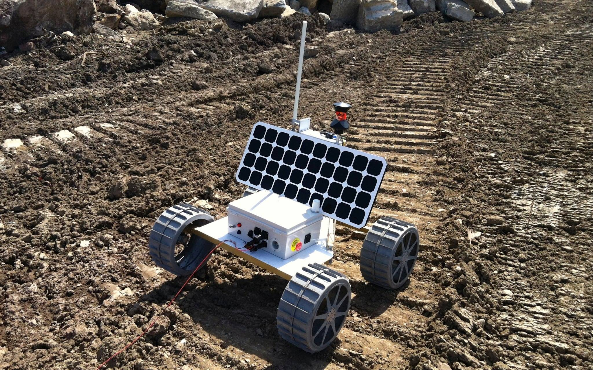
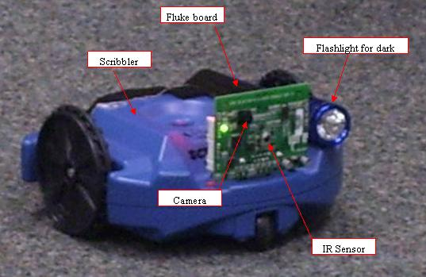

Sponsored research with United Technologies Research Center (UTRC) to research methods for sensor fusion and collaborative exploration and navigation for land-based vehicles. Our team of 4 consisted of two software, an electrical and a mechanical. My primary responsibilities included managing software, simulations (Gazebo) and leading the spring validation demonstrations for our sponsors.

As part of the CMU program the project focused on autonomous office trash detection and disposal through designing and building custom differential drive vehicles with various sensors (Hokuyo laser scanners, Kinect depth images, and sonar range sensors). This included 3D modelling, 3D printing and lasercutting, PCB design, and electronics and software development and testing. 
We used ROS to build a collaborative system capable of foraging an office cubicle environment 11% more efficiently than a system of independent robots in 31 simulation trials. We also combined sensor information from a Kinect and sonar to offset the min/max range limits of both, resulting in a better localization for our customized P3DX robot used in the trials.
» Google Lunar X-Prize - Team Astrobotic
 More info Astrobotic selected as GLXP Finalist NASA Astrobotic Partnernship Agreement Original Architecture Diagram{kind=link}
Avionics team lead of 9 in Red Whitaker's Mobile Robotics course with Astrobotic competing in the Google Lunar X Prize to design and build a lunar rover that will drive 500 meters on the moon and send HD video back to earth.
The Avionics team designed, built, and tested all electronic components in the rover. A prototype rover was successfully built in 90 days that drove 1/2 a kilometer in a gravity offload sandpit simulating lunar gravity and sending back a remote HD video stream. A majority of the electronic components were tested in 2e-2 torr (~68km above sea level) medium vacuum.
Personal Responsibilities: Making things happen through relationships with Red/sub-team leads/electronics suppliers and getting my team what they needed to build the rover (vision/equipment/space). I also presented design reviews to judges/astronauts as part of our competition requirements.
The prototype was considered a success and on Feb 19, 2014 Astrobotic was selected as a finalist in the Google Lunar X Prize. Then on May 3, 2014 NASA and Astrobotic entered a partnership agreement on the Lunar Lander project which will house the rover.
Second iteration of Lunar Rover continued by Spring 2014 team. 
» SPLAM for Drones – Path Planning with Uncertainty via Voronoi Uncertainty Fields
Read More Source CodePublications
ICRA 2013Simultaneous Planning Localization and Mapping for Unmanned Aerial Drones
Working with 3 PhD students we developed a MATLAB Simulator for UAV navigation with vision uncertainty using SLAM as well as a novel motion planning algorithm that combines Voronoi decomposition with Potential fields producing a superior motion-planning algorithm.

» Golem Krang at the GT RIM Humanoid Robotics Lab
Robotics LabOnly undergrad researcher for a 200kg self-balancing 2-wheeled humanoid robot with team of 4 PhD students.
Installed left Schunk arm, which includes wiring, soldering, and developing the code to interface the 2nd arm.
Installed and developed interface for Force-Torque sensors on both arms, then utilized sensors to develop a motion compliance control interface allowing the robot the comply with outside contact (human hand-shake for example).
Helped run live demos, including demoing robot to 8 US Congressmen & 6 members of German House of Representatives. Due to this and other work with the Krang, it recently recieved a $900,000 grant from the US Navy.
Team leader of 3 applying motion-planning techniques for a Rovio, a 3-wheeled robot.
Overhead vision using OpenCV2 for visual tracking and Path planning using A* search with Approximate Cell Decomposition and Voronoi Diagrams, combined with AI state-machine and fuzzy logic techniques for intelligent planning. First place in class tournament.
Visual Recognition and Pursuit using a Scribbler 2–Wheeled Robot
 Read MoreTeam Lead of 3. The Robocop is a Scribbler Robot using a Fluke board enabling it to see the environment using the onboard camera.
Robocop is designed to start in an unknown position with unknown orientation in an unknown environment and look around and find the bad guy, signified by a bright suspicious color such as red.
Upon detecting the bad guy, Robocop while drive towards the bad guy chasing him down while avoiding obstacles using the onboard IR sensor.
Once the bad guy is within nabbing distance of the Robocop, a color photograph is taken of the criminal and the world is saved once again.